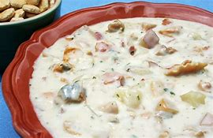

Clam Chowder

Ingredients
Switch to Steps
-
3 Strips of Smoked Bacon
-
1 Onion
-
6 1/2 oz Minced Clams
-
1 can Clam Juice
-
2 Red Potatoes
-
3/4 cup Corn
-
1 1/2 cup Milk
-
2 tsp Worcestershire Sauce
-
3/4 tsp Dried Savory Leaves
Steps
Switch to Ingredients
-
Cook the bacon in a 3-qt saucepan until browned, about 6 minutes.
-
Add the onion to the pan, and saute until translucent, about 3 minutes.
-
Drain the clams, reserving the juice.
-
Add the canned clam juice, the potatoes, and the reserved juice to the pan.
-
Cook the mixture until the potatoes are tender, about 15 to 20 minutes.
-
Using a slotted spoon, transfer half the mixture to a bowl, cover with foil to keep warm.
-
Using a handheld immersion blender, puree the onion mixture in the pan.
-
Return the reserved vegetabled to the pan.
-
Stir in the corn, milk, Worcestershire sauce, savory leaves and clams.
-
Heat the chowder on low heat (do not boil!),
stirring occasionally, until it is hot, 5-10 minutes.
-
Crumble the bacon and top each serving with it.